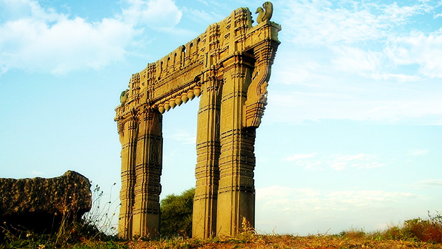
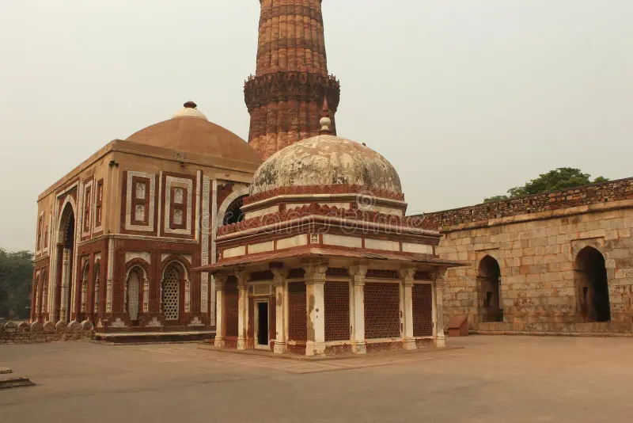
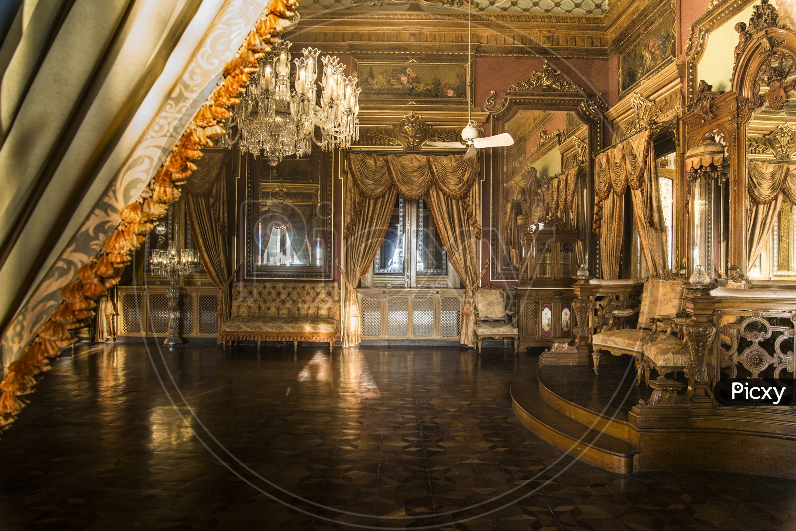

Telangana region has been ruled by great dynasties such as Sathavahanas, Kakatiyas, Chalukyas, Mughals, Qutubshahis, Asafjahis. Kakathiyas contributions to architecture are considered most impressive while Sathavahanas ruled Telangana region for about 400 years right from the 2nd century B.C. to beyond the 2nd century A.D. Among Kakathiyas, Prataparudra, was a great ruler who ruled till A.D.1323.


During the rule of Bahamani, Quli Qutub, born in Persia, came to Deccan and he had become the Governor of this region. Quli Qutub later became independent and formed his own Qutubshahi Dynasty in 1518. The Golkonda fort was built by Quli qutub. In his reign, two tanks such as Ibrahim Pantam tank and Hussainsagar were built including a bridge on river Musi, which is known as Puranapul. The Hindus of Telangana region remember him for his immense patronage of Telugu literature. Many Telugu poets such as Addanki Gangadhar Kavi, Panuganti Telanganarya, Kandukuri Rudra Kavi had flourished in his court.
Qutubshah then shifted the capital from Golkonda to Hyderabad on the banks of the river Musi. He built the Jamia mosque at Charminar. The State of Hyderabad was eventually founded by Mir Qamruddin Chin Qilich Khan. Later, he conferred himself the title of Asaf Jah, by which title the dynasty is still known.

In 1799, the Nizam rulers aided the East India Company in their war with Tipu Sultan. When the Nizam was compelled to sign a subsidiary alliance with the British in the year 1799, he lost his authority over the state’s defence and its external affairs. The Nizam also had to give up the Coastal Andhra and the Rayalaseema regions of his vast kingdom to the British, as he was unable to pay monetarily for the assistance the British rendered during the Nizam’s wars against Tipu Sultan. Coastal Andhra and Rayalaseema then became part of the British Presidency of Madras, while Telangana became part of the princely state of Hyderabad. For a long time, the Nizam lead a privileged and a charmed life. He was considered to be the world’s richest man of his time.
The Indian Government refused to entertain a request that Hyderabad would seek a separate status and Operation Polo was initiated to annex Hyderabad state. The Kannada and Marathi speaking areas of Hyderabad state was then merged with Karnataka and Maharashtra respectively while Telugu speaking region of Telangana was merged with Andhra state with Hyderabad as the capital of united Andhra Pradesh state in 1956. Although there was resentment against the merger, there was a period of calm.
After the promises made to respect the rights of Telangana were not fulfilled, a separate Telangana agitation was launched in 1969. Following subsequent Gentleman’s agreement and again a period of broken promises and injustice, Telangana movement was given a final push by Shri. K Chandrasekhar Rao in 2001 with the formation of TRS. Finally due to the whole hearted efforts of Telangana society and political parties, the Government of India agreed for creation of a separate Telangana state in July, 2013 and Telangana came into effect on June 2, 2014 as ‘Telangana state’, the 29th state of Indian Union